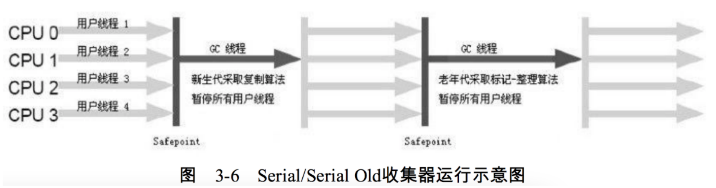
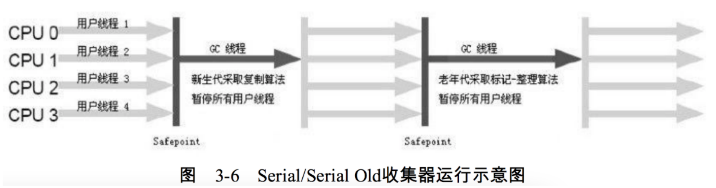

新生代Serial收集器

采用一个CPU、一个线程去完成垃圾收集工作。在垃圾收集时必须暂停其它所有的线程（Stop The World），直到收集结束。是Client模式下默认新生代收集器。
- Serial收集器是运行在Client模式下的默认新生代收集器
- 对于限定单个CPU的环境来说，简单而高效，省去了线程交互的开销
- Client模式下的应用程序内存一般不会很大，收集几十兆到一两百兆的新生代，停顿可控制在几十毫秒最多一百多毫秒以内，只要不频繁发生，停顿完全可用接受

采用一个CPU、一个线程去完成垃圾收集工作。在垃圾收集时必须暂停其它所有的线程（Stop The World），直到收集结束。是Client模式下默认新生代收集器。